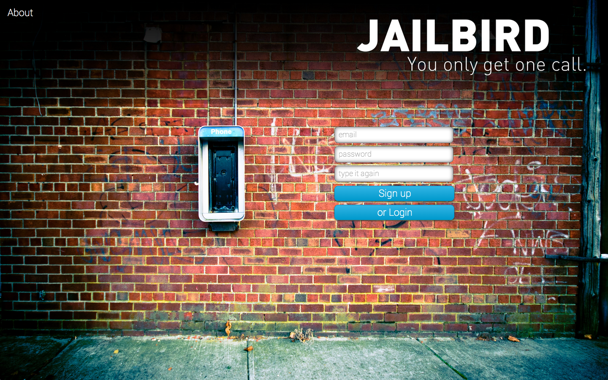

Code

Jailbird allows you to call one phone number to contact your friends and family through SMS messaging or Voice calls. Next time you lose your phone, call Jailbird and get in touch in a jiffy. Technologies used to build this app include Twilio's API, Devise, Google Contacts API, jQuery, and Ruby on Rails.
Racing Boxes -- Live /Repo
This is a little Javascript game I built to learn Object Oriented Javascript. Race against a friend by pressing your key as quickly as possible.
Collection of Work from Dev Bootcamp -- Repo
This repo is a collection of the challenges and projects I've written throughout DevBootcamp. While I am proud of how much I've learnt and the work I've done, I also recognize that much of the code could be refactored and improved. This repo represents the journey and how I've progressed.
Talks
Support Driven Documentation
At Twilio, a large part of our documentation is written and maintained by the Support team. This talk explains the importance of having the support team own documentation and the ways to provide amazing documentation. This was a shorter, sweeter, revised verison of the talk Nisha and I presented at the Write the Docs conference.
Translating Customer Interactions to Documentation
Documentation has several benefits: centralizes knowledge, helps companies scale, and provides upfront information. This was a talk that Nisha and I gave at the 2013 Write the Docs conference about why it's important to have the Support team write documentation and how great documentation can be produced. A video of this talk can also be found here
Lightning Talk on Intro to Twilio TwiML
Twilio's API is easy to use and the TwiML (Twilio Markup Language) used to make your web application talk is even simplier. I have personally found Twilio a great way to become more comfortable using API's and more confident in my coding. This was a 5 minute lightning talk I gave to introduce TwiML so beginner coders can see how they could start coding right away.
Articles
A summary of the nine talks given during the first Women Who Code Lightning Talk event. This article was feature on Forbes.com.
This was a short article I wrote for Women 2.0 about how the community makes learning Ruby such an great experience.